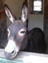

Trenton, Michigan,
U.S.A
Lé 28 octobre, 1972
Moussieu l' Rédacteu,
“Papa”, j' li dis eune séthée quand j'tions au pid du feu auprès l'thée, “Mess Le Boutilyi, John Wesley, t' a dit à matin dans la forge qué san J'va 'tait 'êffrédolé'. Tch'est qu' ch'la veurt dithe?”
“Eh bein, man garçon,” i' m'dit, “v'la tchi veurt dithe qué lé j'va est un mio êpeûthé!”
“Est-che pour ch'la tch'i' faut mett' des leunettes sus l' bridot?” J'li d'mandis.
“Eh bein,” m'dit Papa, “nou peut dithe qué oui, ouaithe qué touos les bridots en ont, des leunettes. V' la tch' empêchi lé j'va d'vaie d'côté et d'êt' êpeûthé par tchiquechose tchi pouorrait l'surprendre, comme, disons, un tchian tchi saut' tait dé d'ssus l' fôssé à côte d'li.”
“Mais pourtchi dithe 'êffrédolé à la pliaiche d' “êpeûthé,” j'dis à Papa.
“Eh bein,” Papa m'rêponnit, “êffrédolé est un vièr mot qué nou m'ouait pon touos les jours à ch't heu, mais nou peut dithe qué l'mot s 'fait sèrvi pûtôt pour un j'va ou un annima tchelconque comme, par exempl'ye, un vieau à la tèrrée, ou les poules dans l' poulailli. Nou fait pûtôt sèrvi l'mot êpeûthé pour eune pèrsonne.”
“Mais quand nou met un j'va à tèrrée,” j'dis à Papa, “lé bridot qu'tu li mets sus la tête n'a pon d' leunettes!”
“Nan”!, Papa m'dit, “mais ch'n'est pon un bridot qu'nou li met dans chu cas-là. Ch'est un g'vêtre. Un bridot est tréjous en tchui, mais un g'vêtre est tchiquechose en corde et même en bouais.”
“Bon!”, J'li dis, “mais j'en ai veu d'même sus la tête des g'niches dans l' Clios d' Jacques à m'n oncl'ye Charles!”
“Eh bein,” m'dit Papa, “nou pouôrrait penser qu' ch'est un g'vêtre dépis tch'il est fait hardi d'la meme faichon, mais ichîn à St. Ouën nou l' appelle un 'lico' quand ch'est pour un vieau ou eune géniche.”
“Et tch'est qu'nou met à eune vaque?”, J'li d'mandis.
“Ah,” i' m'dit, “ch'est eune difféthente affaithe. Eune vaque a des cornes: A l'entou du bas des cornes i' faut li mettre eune 'chaîne dé tête' dans cèrtaines pâraisses, mais ichîn ès Landes à St. Ouën j' l' appelons lé 'carcân'. La têtchiéthe est un but d'filin qu'nou-samathe au carcan pour condithe la vaque à la tèrrée.”
“J'ouiyais un homme té dithe dans la forge qué san bieau-fis es têtouongne comme eune mule,” j'dis à Papa. “Tch'est qu'ch'est qu'eune mule? ”
“Eune mule,” i' m'dit, “a eune cèrtaine èrsembliance à un j'va, mais ou n'est pas si grande. Nou peut dithe qu'oulle est un mêlange, car san p'pèe 'tait un j'va et sa m'mèe 'tait eune âne!”
“Bon!”, j'li dis, “èrsembl'ye-t-alle à sa m'mèe? ”
“Eh bein,” i' m'dit, pûtôt, à sa m'mèe. Oulle a l's ouothelles longues comme lyi, et oulle est pus têtouongne qu'un j'va.”
“Lé mulot est-i' l'homme mule? ”, jé d'mandis à Papa.
“Nannin, man p'tit,” I' m'rêponnit, “lé mulot est eune manniéthe dé grosse souothis tchi fait sa d'meuthe dans les gardîns ou dans les clios. Ch'est un 'mulet' tch'est l' mâle dans l'cas d'la mule, mais nou dit pûtôt la mule pour les deux.”
“Pourtchi qu' nou dit qu'eune mule est têtouongne? ”, j'li d'mandis.
“Eh bein,” i' m'dit, “i faut penser qu'la mule et l'mulet ont héthité pus du caractéthe dé l'âne qué du j'va, et l'âne a tréjous ieu la réputâtion d' être têtue; ch'est en tchi la mule est supposé y être étout.”
“J'n'en ai pon 'couo veu, mé, d'ânes ni d'mules,” j'dis à Papa.

“I' n'y en a pon fort par les c'mîns dans la contrée,” i' m'dit, “mais j'connais un homme à La Trinneté tch'a eune âne, et ou l' porte en ville auve san p'tit quèrre au san'mdi. Si tu es bouan garçon j'îthons en ville les vaie tchique san'mdi quand i' n'y étha pon trop d'travas dans la forge.
“J'ai tréjous ieu un profond respé pour la pouorre pétite âne,” Papa continnuit, “car oulle est honorée dans la Bibl'ye. Ou fut chouaîsie pour eune tâche dé grande importance, et ou s' atchittit admîthabliément. Dans l'Êvangile sélon St. Matchi, Chapitre 2, Vèrset 14, i' nouos est dit qué 'Joseph prit de nuit le Petit Enfant et sa mere et se retira en Egypte' et tch'il' y restidrent jusqu'à la mort dé Hérode, quand i' r'vindrent dans l' pays d'Israël. La légende nouos dit qué ch'tait sus eune âne qué St. Joseph les portit. Dans l'Chapitre 21, Vèrset 5, i' nouos est dit qué Nouotre Seigneur Li-meme entrit à Jerusalem 'Débonnaire et monte sus un âne'! Ch'tait l'jour qué j' célébrons comme lé Dinmache des Rameaux dans l'Eglyise, et dans chu cas 'chin ch'n'est pon affaithe dé légende car St. Matchi mentionne l'âne d'êt' chouaîsie pour porter Nouotre Seigneur Jésû-Christ, pas seulement comme êfant quand il 'tait en dangi d' être tué par Hérode, mais à l'occâsion dé S'n entrée triomphale à Jerusalem pour sé laîssi êt' crucifié comme 'offrande' pour la rédemption du monde.”
George d'la Forge
Viyiz étout: